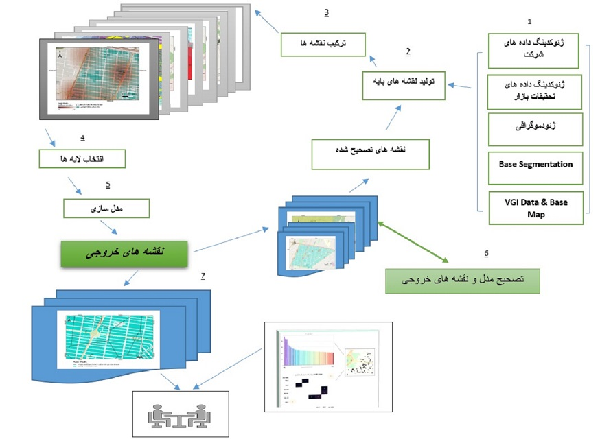

چرا ژئومارکتینگ
یک نقشه بیش از هزار کلمه می گوید!
مدل ها ونقشه های ژئومارکتینگ به شرکت شما کمک می کند به سولات منطقه ای ومحلی بازار خود پاسخ دهید
این تکنولوژی این امکان را به شما می دهد داده های خود را با انواع نقشه ها تجزیه و تحلیل کنید و شرکت خود را در مقیاس های متفات تجسم کنید
نقشه های تحلیلی : روشی کارآمد برای شبیه سازی بازا، رقابت، گپ ها، یافتن مناطق بالقوه و عوامل پنهان موثر
اساس ژئومارکتینگ داده های داخلی و خارجی است که دارای مرجع مکانی هستند.این داده ها با کمک سیستم اطلاعات جغرافیایی برروی نقشه های دیجیتال مورد استفاده وتجزیه وتحلیل قرارمی گیرند.
80 درصد ازکل داده های بسیاری ازشرکت ها دارای یک مرجع جغرافیایی (مکانی محور) است
حوزه های اصلی کاربرد سیستم های ژئومارکتینگ : توسعه، فروش، بازاریابی و گزارش
اکثرخروجی ها نقشه های دیجیتال هستند که به تیم تحلیل بازار و صاحبان مشاغل اجازه می دهد تا بازار خود را از پلت فرم و منظری متفاوت تجزیه و تحلیل ومشاهده کنند
سوالات و چالش های جدی فروشگاه های زنجیره ای !
چرا برخی فروشگاه ها عملکرد بهتری نسبت به سایر فروشگاه ها دارند؟
در ازای هر فروشگاه چقدر درآمد باید ایجاد می کند ؟
تاثیر فروشگاه جدید بر سایر فروشگاه ها؟
آیا اگر شبکه فروشگاه خود را گسترش دهم، cannibalisation فروش رخ خواهد داد؟
چند فروشگاه یا منطقه را می توانم در یک بازار جای دهم؟
چگونه می توانم فروش را برای هر فروشگاهی که در مقایسه با سایر فروشگاه ها محک زده است، تجزیه و تحلیل کنم؟
آیا باید یکی از فروشگاه هایم را جابجا کنم یا یا از شبکه خارج کنیم و چرا؟
چگونه فاصله از رقبا بر رفتار خرید و فروش تاثیر می گذارد؟
تعامل بین فروشگاهی و فروش آنلاین یا ارسالی چیست؟
چطور می توان قلمروها و مناطق فروش محصول را بشکل مناسبی تقسیم بندی کرد؟
چه کسی کجا بیشتر به یک کمپین بازاریابی پاسخ می دهد؟
ماهیت و هدف از تکنولوژی LBS(Location Based Services) پاسخ به داسته از سولات است.
سولات و چالش های جدی صنعت خرد فروشی !
چطور می توان قلمروها و مناطق فروش محصول را بشکل مناسبی تقسیم بندی کرد؟
آیا تقاضای بالایی برای محصولات جدید شما در منطقه ای که فعالیت میکنید وجود دارد؟
تاثیر فروشگاه جدید بر سایر فروشگاه ها؟
مشتریان با ارزش و سودآور شما چه کسانی و درچه منطقه فروشی هستند؟
چه کسی کجا بیشتر به یک کمپین بازاریابی پاسخ می دهد؟
برند و مصول شرکت شما در ازای هر فروشگاه چقدر درآمد ایجاد می کند ؟
چه منطقه و ناحیه فروشی، تقاضایی کافی برای محصول شما دارد؟ برای محصولات جدید چه منطقه و فروشگاهی بهترین و یا ضعیفترین نماینده برای ارائه کالای برند شماست ؟
ماهیت و هدف از تکنولوژی LBS(Location Based Services) پاسخ به داسته از سولات است.
مراحل پیاده سازی طرح های ژئومارکتینگ
ژئومارکتینگ و علوم داده
مدل های ژئومارکتینگ جامع ودقیق هستند: به دلیل استفاده از پارامترهای ورودی جغرافیایی وغیر جغرافیایی به طورهمزمان
اکثرخروجی ها نقشه های دیجیتال هستند که به تیم تحلیل بازار و صاحبان مشاغل اجازه می دهد تا بازار خود را از پلت فرم و منظری متفاوت تجزیه و تحلیل ومشاهده کنند
کاهش overfitting : به دلیل استفاده ازوردی های Geobase
یافتن متغییرهای تاثیرگزارجدید
ژئومارکتینگ دربسیارازمواردمانند طبقه بندی بازارهدف، نمونه ها، پیش بینی ها،مناطق فروش، برآورد تقاضا برای انواع محصول و ژئودموگرافیک، تحلیل رفتار مصرف کنندگان در نواحی متفاوت ، cannibalization واولویت توزیع استفاده می شود
Spatial Decision-Support Systems (SDSS)
روشهای ژئومارکتینگ تنها به تصمیمگیری مکان محدود نمیشوند، این مدل ها با ترکیب با سایرمدل ها ، جامعیت و دقت مدل های تصمیمگیری را، به جهت استفاده ازنقشه های تحلیلی وارتباط بین عوامل تاثیرگزار بازار رقابت ، دربسیاری از جنبه ها به نحو چشمگیری ارتقاع می دهد
پایگاه داده مکانی (جغرافیایی) مانند پایگاه دادهای رایج است، اما برای ایجاد ستون های جدید و ارتباط بین محصولات، مشتریان، مناطق فروش،مناطق بالقوه وسطح رقابت پیوندهای(Foreign key) را برای متغیرهای مکانی و غیرمکانی ایجاد می کند
صنعت بنکداری
در سال های اخیر نهاد های مالی مخصوصا صنعت بنکداری در یک محیط کاملا رقابتی رو به فزاینده ای کار می کنند.در پاسخ به این بازار رقابتی و ناپایدار، شناخت همه جانبه این فضا و همچنین استفاده ازفناوری های نوین درراستای افزایش توانایی رقابتی اجتناب ناپذیراست
بانک ها برای پاسخ به این دست از سوالات و رسیدن به یک درک کامل از بازار رقابتی خود باید از فناوری های استفاده کنند که توانایی ارائه اطلاعات در بستر مکان و فضایی جغرافیایی را داشته باشد. دراین بین سیستم اطلاعات جغرافیای (GIS) در راستایی ناحیه بندی فعالیت ها،شناسایی مکان های مناسب برای ارائه خدمات و شعب جدید بهینه سازی مکانی ATM در فضایی رقابتی،شناسایی گروها و بازار های هدف در بستر ژئودموگرافیک (شناسایی و شناخت مشتریها در بعد مکان) شناسایی بازار های هدف و تقسیم بندی آنها،شناسایی مشتری های بالقوه کمک شایانی می کند و از آنجا که همه اطلاعات بیان شده به صورت نقشه و بصوری ارئه می شود، می تواند موقعیت منحصر به فرد بانک را نسبت به بانک های رقیب در یک محل خاص نمایش دهد،که در نهایت این نقشه ها به خاطر روشن کردن ابعاد بصری ذهن در کشف روابط علت و معلولی و و ارتقاع سیستم تصمیم گیر بسیار موثر است.
Contact Me
email@email.com